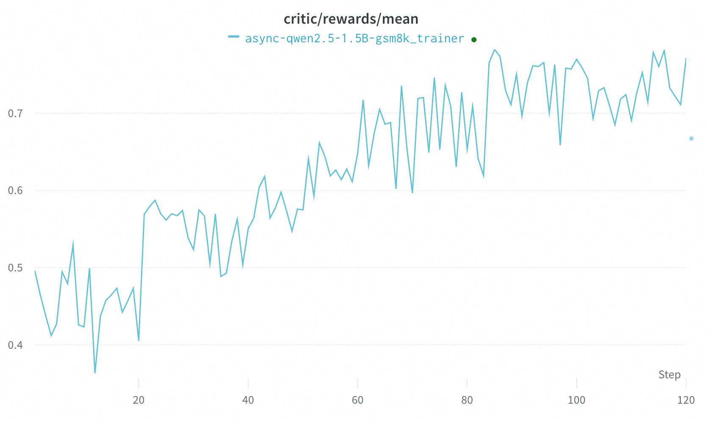

Asynchronous RFT
This example shows how to run RFT in a fully asynchronous mode with the GRPO algorithm, Qwen-2.5-1.5B-Instruct model and GSM8K dataset.
Trinity-RFT supports an asynchronous mode by running the trainer and explorer in separate processes.
For this purpose, we prepare two main config files: explorer.yaml and trainer.yaml.
The main difference between them is that in explorer.yaml we set mode as explore, while in trainer.yaml we set mode as train.
The model weights of the explorer and trainer are synchronized once every sync_interval * batch_size tasks.
Suppose we have a node of 8 GPUs; we use 4 GPUs for the trainer and 4 GPUs for the explorer.
Some important setups of explorer.yaml are listed in the following:
project: <project_name>
name: <experiment_name>
mode: explore
checkpoint_root_dir: /PATH/TO/CHECKPOINT/
algorithm:
algorithm_type: grpo
repeat_times: 8
model:
model_path: /PATH/TO/MODEL/
cluster:
node_num: 1
gpu_per_node: 4
buffer:
total_epochs: 1
batch_size: 96
explorer_input:
taskset:
name: gsm8k
storage_type: file
path: /PATH/TO/DATASET/
split: train
format:
prompt_key: 'question'
response_key: 'answer'
rollout_args:
temperature: 1.0
default_workflow_type: 'math_workflow'
trainer_input:
experience_buffer:
name: gsm8k_buffer
storage_type: queue
path: 'sqlite:///gsm8k.db'
explorer:
eval_interval: 10
runner_num: 32
rollout_model:
engine_type: vllm_async
engine_num: 4
synchronizer:
sync_method: 'checkpoint'
sync_interval: 10
trainer:
trainer_config_path: examples/async_gsm8k/verl_config.yaml
Some important setups of trainer.yaml are listed in the following:
project: <project_name>
name: <experiment_name>
mode: train
checkpoint_root_dir: /PATH/TO/CHECKPOINT/
algorithm:
algorithm_type: grpo
repeat_times: 8
model:
model_path: /PATH/TO/MODEL/
cluster:
node_num: 1
gpu_per_node: 4
buffer:
total_epochs: 1
batch_size: 96
explorer_input:
taskset:
name: gsm8k
storage_type: file
path: /PATH/TO/DATASET/
format:
prompt_key: 'question'
response_key: 'answer'
rollout_args:
temperature: 1.0
default_workflow_type: 'math_workflow'
trainer_input:
experience_buffer:
name: gsm8k_buffer
storage_type: queue
path: 'sqlite:///gsm8k.db'
synchronizer:
sync_method: 'checkpoint'
sync_interval: 10
trainer:
trainer_config_path: examples/async_gsm8k/verl_config.yaml
You may run this example with the following command:
bash examples/async_gsm8k/run.sh
The following plot shows the learning curve of GRPO in the asynchronous mode.
This result should be regarded merely as a baseline, since GRPO is supposed to be an on-policy algorithm. We are continuously investigating other RL algorithms (e.g., OPMD) in the asynchronous mode.
